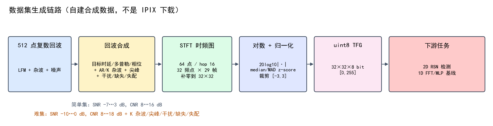
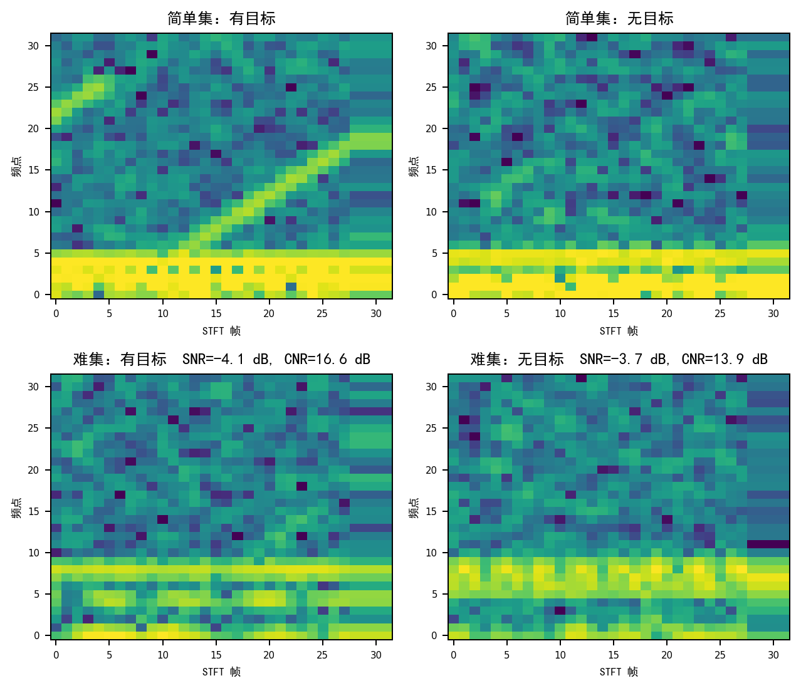
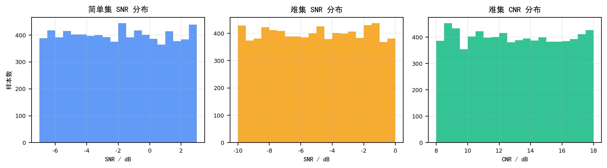

这是我们自己用脚本生成的合成雷达回波数据集，不是从网上直接下载的公开数据集，也不是 IPIX 原始数据。任务只有一类：判断一段 512 点复数回波里“有/无目标”。
生成器参考了雷达信号处理中的标准模型：LFM 发射信号、匹配滤波/FFT 频域处理、AR(1) 慢杂波、K 分布重尾杂波、海尖峰、窄带干扰、随机缺失和 chirp rate 失配。它参考了 GRSL 2025 RSN 的“时频图 + 脉冲残差网络 + 膜电位虚警控制”思路，但数据样本、标签、噪声实现全部由本项目生成，没有使用论文或网盘的样本。

复基带回波模型为：
rx[n] = y · a · s[n−d] · exp(j2πfdn/Fs) · exp(jφ) + c[n] + w[n]
s(t) = exp(jπKt2), 0 ≤ t ≤ Tp, K = B/Tp
其中 y∈{0,1} 是标签，a 是目标幅度，d 是时延，fd 是多普勒，φ 是随机初相，c[n] 是杂波，w[n] 是复高斯噪声。负样本令 y=0，只保留杂波+噪声。
| 参数 | 符号/公式 | 值 | 说明 |
|---|---|---|---|
| 采样率 | Fs | 50 MHz | 复基带，1 采样 = 20 ns |
| 每脉冲采样点 | N | 512 | 约 10.24 µs 记录 |
| LFM 脉宽 | Tp | 10 µs | 其余为噪声/杂波 |
| LFM 带宽 | B | 20 MHz | 距离分辨率约 7.5 m（理想） |
| 调频率 | K=B/Tp | 2×1012 Hz/s | chirp 斜率 |
| 目标时延 | d | 0–160 samples | 约 0–3.2 µs |
| 多普勒 | fd | ±80 kHz | 均匀分布 |
| 初相 | φ | [0, 2π) | 均匀分布 |
| 幅度起伏 | a | log-normal，σ=1.5 dB（简单）/2.0 dB（难） | 相对噪声功率 |
| SNR | — | −7…3 dB（简单）；−10…0 dB（难） | 逐样本均匀采样 |
SNR 定义为目标回波功率与噪声功率之比（幅度按 10SNR/20 缩放，噪声为单位方差复高斯）。注意：训练/验证/测试都按上述范围采样，测试集没有单独改 SNR 分布。
| 成分 | 简单集 | 难集 | 作用 |
|---|---|---|---|
| AR(1) 慢杂波 | ρ=0.94–0.995 | ρ=0.95–0.998 | 低通、时间相关，模拟海/地杂波 |
| 慢正弦杂波 | 3 个，0.3–6 MHz | 3 个，0.3–8 MHz | 窄带尖峰，模拟杂波条纹 |
| K 分布重尾 | — | gamma texture shape=0.7；65% AR + 35% K | 重尾、非高斯，检验鲁棒性 |
| CNR | 8–16 dB | 8–18 dB | 杂波功率相对噪声 |
| 海尖峰 | — | 概率 5%，长度 2–8 点，幅度 12–24 dB，频率 0.5–12 MHz | 短时强散射 |
| 窄带干扰 | — | 概率 15%，幅度 4–12 dB，频率 1–12 MHz | 非目标窄带谱线 |
| 随机缺失 | — | 概率 10%，长度 N/20–N/5（约 25–102 点） | 前端丢数/遮挡 |
| chirp 失配 | — | ±2%（代码 mismatch=0.02） | 目标调频率与参考不一致 |
tf_data_hard.py 顶部 docstring 写的是 ±4%，但实际生成参数是 mismatch=0.02，即 ±2%；本报告以代码实际值为准。若后续要复现 docstring 的 ±4%，改这一行并重新生成数据即可。
| 参数 | 值 | 说明 |
|---|---|---|
| STFT 窗长 | 64 点 | Hann 窗（SciPy 默认） |
| hop | 16（noverlap=48） | 75% 重叠 |
| FFT 点数 | 64 | 取前 32 个频点（0…Fs/2） |
| 帧数 | 29 | (512−64)/16+1=29，边缘 pad 到 32 |
| 输出 | 32×32 | 32 频点 × 32 帧 |
| 幅度 | 20 log10(|STFT|+10−12) | dB 域 |
| 归一化 | 全图 median/MAD | 稳健 z-score，抑制绝对能量 |
| 裁剪/量化 | z∈[−3,3] → uint8 | (z+3)/6×255，四舍五入 |

| 数据集/划分 | 样本数 | 正样本 | 负样本 | 正样本比例 | SNR / dB | CNR / dB | 像素均值/标准差 |
|---|---|---|---|---|---|---|---|
| 简单 train | 24,000 | 11,946 | 12,054 | 49.78% | −7…3（均值 −2.0） | 8…16（生成用） | 137.5 / 55.9 |
| 简单 val | 4,000 | 1,980 | 2,020 | 49.50% | −7…3（−2.0） | 8…16 | 137.5 / 56.0 |
| 简单 test | 8,000 | 3,962 | 4,038 | 49.53% | −7…3（−2.0） | 8…16 | 137.5 / 56.0 |
| 难 train | 24,000 | 11,946 | 12,054 | 49.78% | −10…0（−5.0） | 8…18（13.0） | 130.3 / 51.0 |
| 难 val | 4,000 | 2,002 | 1,998 | 50.05% | −10…0（−5.0） | 8…18（13.1） | 130.3 / 51.1 |
| 难 test | 8,000 | 4,010 | 3,990 | 50.13% | −10…0（−5.0） | 8…18（13.0） | 130.2 / 51.0 |
| 1D 512（test） | 8,000 | 3,962 | 4,038 | 49.53% | −7…3（−2.0） | 8…16（12.0） | 126.7 / 50.2 |
简单集/难集均为 24,000/4,000/8,000；测试集 8,000 用于报告中的准确率/PD/PFA/AUC。1D 基线使用 512 点回波的 256 个正频率 FFT 幅度 bin，标签与简单集同源。

简单集的目标 chirp 在 TFG 中是一条清晰的斜线，2D 卷积很容易利用；难集把目标埋进 K 重尾杂波、海尖峰、窄带干扰和缺失段里，并把 SNR 整体压低 5 dB，因此它检验的是“能不能在失配/强杂波下保住检测”，而不是“能不能拟合合成纹理”。
| 模型 | 简单集准确率 | 简单集 PD / PFA | 简单集 AUC | 难集准确率 | 难集 AUC |
|---|---|---|---|---|---|
| 2D ANN 上界 | 99.83% | — | — | — | — |
| TFG-RSN 6 层（float） | 99.72% | 99.67 / 0.22% | 0.9998 | 76.89% | 0.8441 |
| TFG-RSN 6 层（int8） | 99.62% | 99.70 / 0.45% | — | — | — |
| TFG-RSN 8 层 | 99.49% | — | — | 76.98% | 0.8397 |
| TFG-RSN width24 | 99.61% | — | — | 76.68% | 0.8429 |
| 1D 8-bit 256-128 | 96.64% | 94.67 / 1.44% | 0.9943 | — | — |
难集在 PFA=10−2 时 PD：6 层 46.7%、8 层 46.1%、width24 48.0%。加层/加宽在简单集和难集都没有明显收益，说明简单集已经饱和，难集瓶颈在数据分布/特征，而不是网络容量。这也是为什么后续硬件工作把重点放在 128-lane 引擎与资源/时序，而不是继续堆层。
数据生成只依赖 NumPy/SciPy；脚本在 python/，默认参数与仓库中的数据一致。
# 简单集：24k/4k/8k，SNR -7..3 dB，CNR 8..16 dB
python python/tf_data.py --train 24000 --val 4000 --test 8000 \
--seed 2027 --out data/radar_tf.npz
# 难集：24k/4k/8k，SNR -10..0 dB，CNR 8..18 dB，K 杂波/尖峰/干扰/缺失/失配
python python/tf_data_hard.py --train 24000 --val 4000 --test 8000 \
--seed 2027 --out data/radar_tf_hard.npz
1D 基线由 python/radar_data.py 生成（256 个正频率 FFT bin，种子 20261123）。数据文件：data/radar_tf.npz（约 32.7 MB）、data/radar_tf_hard.npz（约 33.8 MB）、data/radar512.npz（约 17.5 MB）。
mismatch=0.02），docstring 的 ±4% 是旧描述；以代码/数据为准。deploy/data/feat_all.mem 是从简单测试集选的 8 个向量，用于上板自检，不代表完整测试集。| 文件 | 大小 | 内容 |
|---|---|---|
data/radar_tf.npz | 32.7 MB | 简单集：x_train/val/test (N,32,32) uint8，y、snr |
data/radar_tf_hard.npz | 33.8 MB | 难集：x、y、snr、cnr；K 杂波/尖峰/干扰/缺失/失配 |
data/radar512.npz | 17.5 MB | 1D 基线：x (N,512) uint8，y、snr、cnr |
python/radar_data.pypython/tf_data.pypython/tf_data_hard.py | — | 回波生成、简单集 TFG、难集 TFG |
docs/dataset_pipeline.pngdocs/dataset_examples.pngdocs/dataset_distributions.png | — | 生成链路、正负样本、SNR/CNR 分布 |
deploy/data/feat_all.mem | 32 KB | 8×1024 字节上板自检向量（来自简单测试集） |